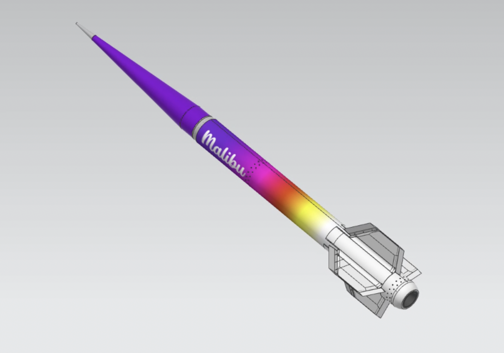

Rocket Propulsion Lab – Composites & Testing
USC Rocket Propulsion Laboratory – Composites & Testing
Role:
Dates:
Problem & Constraints
Your Contribution
Engineering Approach
Testing & Validation
Results & Lessons Learned
← Back to Home